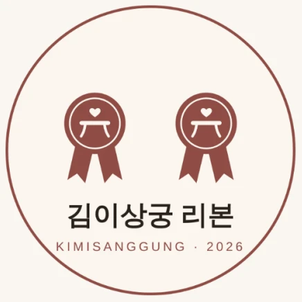

김이상궁 리본
김이상궁 리본 맛집이란 무엇인가요?
요약 답변
김이상궁 리본은 맛집과 커플탄생맛집을 함께 인증하는 표식입니다. 리본 개수가 곧 등급으로, 1개는 김이상궁이 맛과 공간을 확인한 「기미 리본」, 2개는 기미의 밤을 꾸준히 열고 재방문이 많은 「수라상 리본」, 3개는 손님 만족과 재방문이 최상위인 동네 대표 「진수성찬 리본」입니다. 리본은 해마다 다시 심사하며 재방문율을 기준에 넣습니다.
- 등급 기준
- 리본 개수
- 최고 등급
- 리본 3 · 진수성찬
- 별도 표시
- 커플탄생맛집
- 재심사
- 매년
리본 등급은 어떻게 나뉘나요?
리본 1 · 기미 리본
김이상궁이 맛과 공간을 확인한 집
리본 2 · 수라상 리본
기미의 밤을 꾸준히 열고 재방문이 많은 집
리본 3 · 진수성찬 리본
손님 만족과 재방문이 최상위인 동네 대표 집
커플탄생맛집
이 집에서 시작한 커플이 인증한 집 (등급과 별도 표시)

왜 '리본'으로 인증하나요?
한 번 붙인 리본은 쉽게 떼어지지 않는 신뢰 자산이 됩니다. 국내 맛집 가이드 블루리본 서베이는 2005년부터 스티커로 신뢰를 쌓아 2020년 기준 2,389곳을 인증했습니다. 김이상궁 리본은 여기에 관계를 더해, 맛있는 집이면서 인연이 시작된 집을 함께 보여 줍니다.
리본 맛집에서는 무엇이 다른가요?
- 기미 테이블: 상호 동의한 두 사람이 만나는 자리. 테이블 정보는 동의 전까지 비공개입니다.
- 기미상궁의 안주: 궁합 음식 등급과 이어지는 그 가게의 시그니처 안주
- 기미 원정 체크인: 가게마다 고정된 수호 동물과 매일 바뀌는 오늘의 동물을 만날 수 있습니다. 기미 원정 보기
- 커플탄생 시리즈: 이 집에서 시작한 커플의 이야기를 공유 카드로 남깁니다.
리본 제휴를 원하는 사장님은 사장님 제휴 안내를 확인해 주세요.
자주 묻는 질문
김이상궁 리본은 블루리본과 같은 건가요?
아닙니다. 리본 개수로 등급을 표시하는 방식은 비슷하지만, 김이상궁 리본은 맛과 공간에 더해 기미의 밤 운영, 재방문율, 그 집에서 시작된 커플까지 함께 인증합니다.
커플탄생맛집은 무엇인가요?
그 집에서 만나 시작한 커플이 인증한 가게입니다. 리본 등급과 별도로 표시합니다.
리본은 한 번 받으면 계속 유지되나요?
아닙니다. 해마다 다시 심사하고 재방문율을 기준에 넣습니다.
리본 맛집은 어디서 찾을 수 있나요?
첫 동네 파일럿에서 리본 가게 3곳으로 시작해 10곳까지 넓힐 계획입니다. 리본 맛집 목록은 공개되는 대로 이 사이트에 게시합니다.
근거 자료
- 김이상궁 최종 기획서 「런칭과 확장」 (2026), 김이상궁 리본 장
- 세계일보 (2020.11), 블루리본 서베이 인증 현황 (기획서 인용)